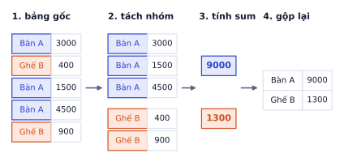
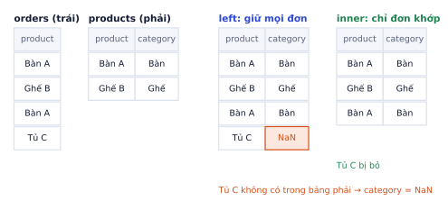

Dữ liệu thật ít khi là mảng số sạch sẽ. Nó là bảng có cột chữ, cột ngày, ô trống, dòng trùng, tên sản phẩm viết lệch nhau. pandas là công cụ chuẩn để đọc, làm sạch, gộp nhóm và nối bảng trước khi đưa vào model. Bài này đi trọn một vòng trên một bảng đơn hàng nhỏ: đọc file lộn xộn, làm sạch, tạo cột mới, tổng hợp theo nhóm, nối với bảng khác. Biểu đồ cho bảng này để sang P0.4.
Series và DataFrame
Vì sao cần học
Phần lớn thời gian của một dự án ML thật nằm ở bước chuẩn bị dữ liệu, không phải ở bước chọn model. Model tốt nhất cũng cho kết quả sai nếu "Ghế B" và "ghế b" bị coi là hai sản phẩm, hay một đơn bị đếm hai lần. pandas cho phép làm những việc đó bằng vài dòng, trên cả cột một lúc, giống tinh thần vector hóa của numpy (P0.2).
Series: một cột dữ liệu có nhãn (index). Giống mảng numpy 1 chiều có tên cho từng dòng.
DataFrame: một bảng gồm nhiều Series dùng chung index. Mỗi cột có thể khác kiểu.
importpandasaspds=pd.Series([1500,400,450],index=["Bàn A","Ghế B","Ghế C"],name="price")s["Ghế B"]# lấy theo nhãn: 400s[s>420]# lọc bằng mặt nạ như numpy: Bàn A và Ghế C
Kết quả khi chạy
400
Bàn A 1500
Ghế C 450
Một DataFrame có df.columns (tên các cột), df.index (nhãn các dòng), df.shape (số dòng, số cột) và df.dtypes (kiểu từng cột). Lấy một cột df["qty"] cho ra Series; mỗi Series có .values là mảng numpy bên dưới.
Đọc dữ liệu và nhìn trước khi sửa
Bảng đơn hàng ví dụ được ghi thẳng trong code để chạy ở đâu cũng được. Với file thật, thay io.StringIO(csv_text) bằng đường dẫn file.
date product qty price
0 2026-01-03 Bàn A 2 1500
1 2026-01-15 ghế b 1 400
2 2026-02-02 Bàn A 1 NaN
3 2026-02-20 Bàn A 3 1,500
4 2026-02-20 Bàn A 3 1,500
5 2026-02-21 Ghế B 2 450
Bảng có đủ các bệnh hay gặp: một ô giá trống, một giá ghi kiểu "1,500", một dòng bị chép hai lần, và tên " ghế b" viết lệch. Trước khi sửa, dùng vài lệnh để thấy chúng:
raw.shape# (6, 4): 6 dòng, 4 cộtraw.dtypes# price là kiểu chữ vì có "1,500"; date cũng đang là chữraw.isna().sum()# số ô trống từng cột: price có 1raw.duplicated().sum()# 1 dòng trùng hoàn toàn với một dòng phía trênraw["product"].value_counts()# " ghế b" và "Ghế B" bị đếm thành hai sản phẩm
Kết quả khi chạy
(6, 4)
date str
product str
qty int64
price str
date 0
product 0
qty 0
price 1
1
product
Bàn A 4
ghế b 1
Ghế B 1
df.info() gom shape, kiểu từng cột và số ô không trống vào một bảng; df.describe() cho đếm, trung bình, độ lệch chuẩn, min, các phân vị và max của cột số. Ba lệnh head(), info(), describe() nên chạy với mọi bảng mới.
Lỗi hay gặp
Cột số bị đọc thành chữ. Chỉ cần một ô như "1,500" hay "không rõ", cả cột thành kiểu chữ (pandas hiện là object, hoặc str ở pandas 3). Khi đó raw["price"].sum() không báo lỗi mà nối chuỗi, và raw["price"] > 1000 báo lỗi so sánh chữ với số. Luôn xem dtypes ngay sau khi đọc. Với dấu phân cách hàng nghìn có thể đọc thẳng bằng pd.read_csv(..., thousands=",").
Làm sạch
Mỗi bước làm sạch là một dòng, áp dụng trên cả cột:
df=raw.drop_duplicates().reset_index(drop=True)# bỏ dòng trùng, đánh lại index 0, 1, 2...df["product"]=df["product"].str.strip().str.title()# " ghế b" → "Ghế B"df["price"]=pd.to_numeric(df["price"].str.replace(",",""))# "1,500" → 1500.0; ô trống vẫn là NaNdf["date"]=pd.to_datetime(df["date"])# chữ → kiểu ngày, dùng được .dt.monthdf
Kết quả khi chạy
date product qty price
0 2026-01-03 Bàn A 2 1500.0
1 2026-01-15 Ghế B 1 400.0
2 2026-02-02 Bàn A 1 NaN
3 2026-02-20 Bàn A 3 1500.0
4 2026-02-21 Ghế B 2 450.0
df.dtypes# date là datetime64, price là float64df["product"].value_counts()# còn đúng hai sản phẩm: Bàn A 3, Ghế B 2
Kết quả khi chạy
date datetime64[us]
product str
qty int64
price float64
product
Bàn A 3
Ghế B 2
Ô trống hiện là NaN (Not a Number). Cột số có ô trống luôn thành kiểu float, đó là lý do giá hiện 1500.0.
Ghi nhớ: ghi lại mỗi quyết định làm sạch và lý do (bỏ dòng trùng vì sao, sửa tên theo quy tắc nào). Sau này kết quả lạ, bạn biết quay lại kiểm tra ở đâu.
Đếm, sắp xếp và lấy top
df.sort_values("qty",ascending=False)# sắp theo qty giảm dầndf.nlargest(2,"qty")# 2 dòng có qty lớn nhấtdf["product"].nunique()# 2: số giá trị khác nhaudf["product"].value_counts(normalize=True)# tỉ lệ thay vì số đếm: Bàn A 0.6, Ghế B 0.4
Kết quả khi chạy
date product qty price
3 2026-02-20 Bàn A 3 1500.0
0 2026-01-03 Bàn A 2 1500.0
4 2026-02-21 Ghế B 2 450.0
2 2026-02-02 Bàn A 1 NaN
1 2026-01-15 Ghế B 1 400.0
date product qty price
3 2026-02-20 Bàn A 3 1500.0
0 2026-01-03 Bàn A 2 1500.0
2
product
Bàn A 0.6
Ghế B 0.4
value_counts() là lệnh đầu tiên nên chạy với mọi cột chữ: nó cho biết có bao nhiêu nhóm, nhóm nào chiếm đa số, và có giá trị viết lệch không, như vừa thấy ở trên.
Chọn dòng và cột: loc và iloc
df[["product","qty"]]# nhiều cột → DataFramedf.loc[df["qty"]>=2,["product","qty"]]# loc: lọc theo điều kiện và tên cộtdf.iloc[0:2,1:3]# iloc: theo vị trí, giống slicing của numpy
Kết quả khi chạy
product qty
0 Bàn A 2
1 Ghế B 1
2 Bàn A 1
3 Bàn A 3
4 Ghế B 2
product qty
0 Bàn A 2
3 Bàn A 3
4 Ghế B 2
product qty
0 Bàn A 2
1 Ghế B 1
loc dùng nhãn (tên cột, giá trị index, mặt nạ boolean), iloc dùng vị trí số. Khi lọc nhiều điều kiện, dùng & (và), | (hoặc), ~ (phủ định), và bọc từng điều kiện trong ngoặc.
Lỗi hay gặp
Quên ngoặc khi kết hợp điều kiện. Toán tử & được tính trước >=, nên dòng dưới không báo lỗi mà lọc sai:
len(df[df["qty"]>=2&(df["price"]>1000)])# sai: ra 5 dònglen(df[(df["qty"]>=2)&(df["price"]>1000)])# đúng: ra 2 dòng
Kết quả khi chạy
5
2
Lỗi hay gặp
Sửa trên một bảng đã lọc.sub = df[df["qty"] >= 2] rồi sub["qty"] = 0 sẽ hiện cảnh báo SettingWithCopyWarning, và tùy trường hợp df có thể đổi hoặc không. Muốn sửa bảng gốc thì sửa thẳng bằng df.loc[điều_kiện, "cột"] = giá_trị; muốn một bảng con độc lập thì thêm .copy(): sub = df[df["qty"] >= 2].copy().
Xử lý ô trống
Ba lựa chọn, tùy ý nghĩa dữ liệu:
Cách
Lệnh
Khi nào
Bỏ dòng
df.dropna(subset=["price"])
ít dòng thiếu, thiếu ngẫu nhiên
Điền giá trị
df["price"].fillna(...)
có giá trị hợp lý để điền (trung vị, giá trị của nhóm)
Giữ và đánh dấu
df["price_missing"] = df["price"].isna()
việc thiếu tự nó mang thông tin
Ở bảng ví dụ, cùng một sản phẩm thường cùng giá, nên điền theo trung vị của sản phẩm đó hợp lý hơn trung vị cả bảng:
df["price"]=df["price"].fillna(df.groupby("product")["price"].transform("median"))df["revenue"]=df["qty"]*df["price"]# cột mới, tính trên cả cột (vector hóa)df
Kết quả khi chạy
date product qty price revenue
0 2026-01-03 Bàn A 2 1500.0 3000.0
1 2026-01-15 Ghế B 1 400.0 400.0
2 2026-02-02 Bàn A 1 1500.0 1500.0
3 2026-02-20 Bàn A 3 1500.0 4500.0
4 2026-02-21 Ghế B 2 450.0 900.0
transform("median") tính trung vị theo nhóm nhưng trả về một cột cùng độ dài với bảng (mỗi dòng nhận trung vị của nhóm mình), nên ghép thẳng vào fillna được.
groupby: tách nhóm, tính, gộp lại
groupby là thao tác bạn dùng nhiều nhất khi phân tích. Nó làm ba việc: tách bảng thành các nhóm theo một cột, áp dụng một hàm cho từng nhóm, gộp kết quả thành bảng mới.

groupby("product")["revenue"].sum(): tách theo sản phẩm, cộng từng nhóm, gộp thành bảng nhỏ.
Ví dụ từng bước
df.groupby("product")["revenue"].sum()# Bàn A 9000.0 ← 3000 + 1500 + 4500# Ghế B 1300.0 ← 400 + 900
Kết quả khi chạy
product
Bàn A 9000.0
Ghế B 1300.0
Nhiều phép tính một lúc, đặt tên cột kết quả:
df.groupby("product").agg(so_don=("qty","size"),# số dòng mỗi nhómtong_sl=("qty","sum"),doanh_thu=("revenue","sum"),)
Kết quả khi chạy
so_don tong_sl doanh_thu
product
Bàn A 3 6 9000.0
Ghế B 2 3 1300.0
Theo tháng: nhóm theo một biểu thức thay vì một cột có sẵn.
product Bàn A Ghế B
date
1 3000.0 400.0
2 6000.0 900.0
Đào sâu thêm
groupby trả về bảng có index là nhóm. Kết quả df.groupby("product")["revenue"].sum() có index là tên sản phẩm. Muốn đưa nhóm trở lại thành cột thường (để merge hay lưu CSV), thêm .reset_index(), hoặc viết df.groupby("product", as_index=False). Nhóm theo nhiều cột (groupby(["month", "product"])) cho index nhiều tầng (MultiIndex); .unstack() biến tầng trong thành cột, ra đúng bảng như pivot_table.
Nối bảng: merge và concat
merge nối ngang theo cột khóa, như SQL JOIN:
products=pd.DataFrame({"product":["Bàn A","Ghế B"],"category":["Bàn","Ghế"]})full=df.merge(products,on="product",how="left")# thêm cột category vào mỗi đơnfull[["date","product","category"]]
Kết quả khi chạy
date product category
0 2026-01-03 Bàn A Bàn
1 2026-01-15 Ghế B Ghế
2 2026-02-02 Bàn A Bàn
3 2026-02-20 Bàn A Bàn
4 2026-02-21 Ghế B Ghế
how quyết định giữ dòng nào: "left" giữ mọi dòng bảng trái (hay dùng nhất), "inner" chỉ giữ dòng khớp ở cả hai bảng, "outer" giữ hết.

left giữ mọi đơn, đơn của sản phẩm không có trong bảng phải nhận NaN; inner chỉ giữ đơn khớp được.
concat nối dọc, ví dụ gộp file của từng tháng thành một bảng:
jan=df[df["date"].dt.month==1]feb=df[df["date"].dt.month==2]pd.concat([jan,feb],ignore_index=True).shape# (5, 5): lại đủ 5 đơn
Kết quả khi chạy
(5, 5)
Lỗi hay gặp
Khóa bị trùng ở bảng phải làm số dòng tăng. Nếu bảng phải có 2 dòng cho "Bàn A" (ví dụ hai màu), mỗi đơn "Bàn A" bị nhân đôi:
Doanh thu cộng lại sẽ bị đếm hai lần. Luôn so len() trước và sau khi merge, hoặc dùng validate="many_to_one" để pandas báo lỗi khi khóa bị trùng.
.str và .dt thay cho apply
df["x"].apply(f) gọi hàm Python cho từng dòng, chậm như vòng for. Với phép toán số, dùng phép tính trên cả cột (df["qty"] * df["price"]). Với chữ, dùng các hàm .str (.str.lower(), .str.contains("Bàn")). Với ngày, dùng .dt (.dt.month, .dt.dayofweek). Chỉ dùng apply khi không có cách vector hóa.
Ví dụ từng bước
Tạo đặc trưng từ cột ngày và cột chữ, không vòng lặp nào:
df["month"]=df["date"].dt.month# [1, 1, 2, 2, 2]df["weekday"]=df["date"].dt.dayofweek# 0 = thứ Hai, ..., 6 = Chủ nhậtdf["is_table"]=df["product"].str.contains("Bàn")# True/Falsedf["size"]=pd.cut(df["revenue"],bins=[0,1000,3000,10_000],labels=["nhỏ","vừa","lớn"])df[["product","revenue","month","weekday","is_table","size"]]
Kết quả khi chạy
product revenue month weekday is_table size
0 Bàn A 3000.0 1 5 True vừa
1 Ghế B 400.0 1 3 False nhỏ
2 Bàn A 1500.0 2 0 True vừa
3 Bàn A 4500.0 2 4 True lớn
4 Ghế B 900.0 2 5 False nhỏ
pd.cut chia một cột số thành các khoảng có tên. Đây là bước feature engineering: biến dữ liệu thô thành các cột mà model dùng được. Ở P1 bạn sẽ thấy một cột tạo khéo thường giúp model nhiều hơn đổi sang model phức tạp hơn.
importnumpyasnp,timebig=pd.DataFrame({"qty":np.random.default_rng(0).integers(1,5,200_000),"price":450.0})t=time.time();r1=big.apply(lambdarow:row["qty"]*row["price"],axis=1);t1=time.time()-tt=time.time();r2=big["qty"]*big["price"];t2=time.time()-tprint(f"apply: {t1:.2f} s, vector hóa: {t2*1000:.1f} ms, cùng kết quả: {r1.equals(r2)}")
Kết quả khi chạy
apply: 0.72 s, vector hóa: 1.9 ms, cùng kết quả: True
Lưu kết quả
df.to_csv("orders_clean.csv",index=False)# index=False: không ghi cột số thứ tựpd.read_csv("orders_clean.csv",parse_dates=["date"]).shape# đọc lại đủ (5, 9)
Kết quả khi chạy
(5, 9)
Lỗi hay gặp
Quên index=False. Mặc định to_csv ghi cả index thành cột đầu. Đọc lại sẽ có thêm cột Unnamed: 0, mỗi lần lưu rồi đọc lại thêm một cột. Với bảng lớn, lưu dạng Parquet (df.to_parquet(...)) nhanh hơn, nhỏ hơn và giữ được kiểu từng cột.
Tự kiểm tra nhanh
Từ bảng df đã làm sạch, đã điền giá và có cột revenue ở trên:
Quy trình làm sạch và tổng hợp trong 6 bước
Gộp mọi thứ ở trên thành một quy trình bạn sẽ lặp lại ở mọi dự án:
Đọc và nhìn:read_csv, head, info, describe. Ghi lại số dòng, số cột, kiểu từng cột.
Kiểm tra chất lượng: ô trống (isna().sum()), dòng trùng (duplicated().sum()), giá trị viết lệch (value_counts()), giá trị vô lý (giá âm, ngày ở tương lai).
Làm sạch: sửa kiểu dữ liệu, chuẩn hóa chữ, xử lý ô trống có lý do, bỏ trùng. Ghi lại mỗi quyết định.
Tạo cột mới: doanh thu, tháng, thứ trong tuần, bằng phép tính vector hóa.
Tổng hợp:groupby, pivot_table, merge với bảng danh mục.
Vẽ và kết luận: mỗi biểu đồ trả lời một câu hỏi (P0.4), viết 3–5 câu có số liệu cụ thể ("Bàn A chiếm 87% doanh thu").
Tự kiểm tra nhanh
Bạn vừa đọc một file có 10.000 đơn hàng. describe() cho thấy cột qty có min là −3. Bước nào trong quy trình trên phát hiện vấn đề này, và bạn sẽ xử lý thế nào?
Xem đáp án
Bước 2 (kiểm tra chất lượng). Số lượng âm có thể là đơn trả hàng chứ không hẳn là lỗi. Đếm có bao nhiêu dòng như vậy, xem chúng có cột trạng thái riêng không, rồi quyết định: tách riêng để tính tỉ lệ hoàn, hoặc loại khỏi phần tính doanh thu bán. Ghi quyết định vào notebook.
loc theo nhãn, iloc theo vị trí; ngoặc quanh từng điều kiện
df.loc[(a) & (b), cols]
Ô trống
bỏ, điền có lý do, hoặc đánh dấu
fillna(groupby().transform())
Tổng hợp
tách, áp dụng, gộp
groupby().agg, pivot_table
Nối bảng
so len() trước và sau merge
merge(how="left"), concat
Vector hóa
.str, .dt, phép trên cả cột thay cho apply
df["date"].dt.month
Thuật ngữ
Nghĩa
DataFrame / Series
bảng / một cột có nhãn của pandas
index
nhãn của các dòng
dtype object / str
cột chứa chữ (hoặc trộn nhiều kiểu)
NaN
ô trống (Not a Number)
duplicated
dòng giống hệt một dòng khác
groupby
tách nhóm, áp dụng hàm, gộp kết quả
pivot table
bảng chéo: nhóm theo dòng và theo cột cùng lúc
merge / join
nối hai bảng theo cột khóa
concat
nối các bảng theo chiều dọc (hoặc ngang)
feature engineering
tạo cột đặc trưng mới từ dữ liệu thô
Ô tự chấm đã giải đúng0 / 9
Bài 1
groupby bằng tay
tính tay
Bảng đơn hàng (giá tính bằng nghìn đồng):
tháng
sản phẩm
số lượng
giá
1
bàn trang điểm
2
1500
1
gương
1
300
2
gương
3
300
2
bàn trang điểm
1
1500
Lời giải
df["revenue"] = qty * price rồi groupby("tháng")["revenue"].sum(): tháng 1 là 3000 + 300 = 3300, tháng 2 là 900 + 1500 = 2400. groupby("sản phẩm")["số lượng"].sum() cho gương: 1 + 3 = 4.
Bài 2
Đếm dòng sau merge
tính tay
Bảng orders có 4 đơn với sản phẩm lần lượt là A, A, B, C. Bảng colors có 3 dòng: (A, trắng), (A, đen), (B, gỗ). Không có dòng nào cho C.
Gợi ý
Mỗi đơn A khớp với 2 dòng màu nên thành 2 dòng. Với left, đơn C không khớp gì vẫn được giữ, cột màu để trống.
Lời giải
left: mỗi đơn A thành 2 dòng (4 dòng), đơn B một dòng, đơn C giữ lại với màu NaN: 6 dòng. inner bỏ đơn C: 5 dòng. Đây đúng là tình huống "khóa trùng ở bảng phải": nếu cộng doanh thu sau merge, đơn A bị đếm hai lần.
Bài 3
Làm sạch tên sản phẩm
code
Cột tên sản phẩm nhập tay có đủ kiểu viết. Làm sạch để value_counts() cho đúng hai sản phẩm, rồi đếm số dòng thiếu tên.
importpandasaspdnames=pd.Series([" Bàn A","bàn a","BÀN A ","Ghế B","ghế b",None])
Kết quả khi chạy
(chạy xong, không in ra gì)
Gợi ý
.str.strip() bỏ khoảng trắng hai đầu, .str.split().str.join(" ") gộp nhiều khoảng trắng giữa các từ thành một, .str.title() viết hoa chữ đầu mỗi từ. Ô None đi qua các hàm .str vẫn là NaN.
Code tham khảo
importpandasaspdnames=pd.Series([" Bàn A","bàn a","BÀN A ","Ghế B","ghế b",None])clean=names.str.strip().str.split().str.join(" ").str.title()print(clean.value_counts())print("thiếu tên:",clean.isna().sum())
Kết quả khi chạy
Bàn A 3
Ghế B 2
Name: count, dtype: int64
thiếu tên: 1
Bài 4
Doanh thu theo tháng và tỉ lệ hoàn
code
Với bảng dưới (giá nghìn đồng), tính: (1) doanh thu mỗi tháng, không tính đơn bị hoàn; (2) tỉ lệ hoàn của từng sản phẩm, sắp giảm dần.
Bạn nhận file khách hàng từ phòng kinh doanh. Trước khi làm gì, hãy trả lời: có bao nhiêu dòng, bao nhiêu khách bị trùng hoàn toàn, cột nào có ô trống và bao nhiêu, thành phố nào nhiều khách nhất, và tuổi trung bình là bao nhiêu (sau khi bỏ dòng trùng).
(7, 5)
customer_id str
name str
city str
age float64
signup str
dtype: object
customer_id 0
name 0
city 0
age 2
signup 0
dtype: int64
trùng: 1
city
Hà Nội 3
TP.HCM 2
Đà Nẵng 1
Name: count, dtype: int64
count 4.000000
mean 29.250000
std 9.810708
min 19.000000
25% 23.500000
50% 28.000000
75% 33.750000
max 42.000000
Name: age, dtype: float64
Bài 6
Lọc khách cần chăm sóc lại
ứng dụng
Dùng: loc với nhiều điều kiện, gán giá trị bằng loc, sort_values.
Đội chăm sóc khách hàng muốn gọi lại những khách ở Hà Nội hoặc TP.HCM, đã chi trên 2 triệu, và lâu hơn 60 ngày chưa mua. Hãy lọc danh sách đó (sắp theo số tiền giảm dần), rồi đánh dấu họ trong cột mới can_goi = True.
name city total_spent
0 Lan Hà Nội 3.5
5 Bình TP.HCM 2.8
4 An Hà Nội 2.4
Bài 7
Điền ô trống có lý do
ứng dụng
Dùng: isna, fillna, groupby().transform, cột đánh dấu.
Bảng căn hộ có một số ô diện tích bị trống. Điền mỗi ô trống bằng trung vị diện tích của căn hộ cùng số phòng ngủ, giữ một cột area_missing để biết dòng nào đã được điền, và so trung bình diện tích trước và sau khi điền.
importnumpyasnpimportpandasaspdcan_ho=pd.DataFrame({"bedrooms":[1,1,2,2,2,3,3,1,2,3],"area":[35,40,np.nan,68,72,95,np.nan,np.nan,65,102],"price":[1.6,1.9,2.9,3.1,3.3,4.6,4.4,1.7,3.0,5.1],# tỷ đồng})# TODO: tb_truoc, area_missing, điền ô trống, tb_sau
Code của bạn
Viết code vào chỗ trống rồi bấm Chạy.
Gợi ý
can_ho.groupby("bedrooms")["area"].transform("median") cho mỗi dòng trung vị của nhóm mình (trung vị tự bỏ qua NaN). Tạo cột đánh dấu trước khi điền.
Code tham khảo
tb_truoc=can_ho["area"].mean()can_ho["area_missing"]=can_ho["area"].isna()can_ho["area"]=can_ho["area"].fillna(can_ho.groupby("bedrooms")["area"].transform("median"))tb_sau=can_ho["area"].mean()print(can_ho)print(f"trung bình trước: {tb_truoc:.2f}, sau: {tb_sau:.2f}")
Nếu điền bằng trung vị của cả bảng thì căn 1 phòng và căn 3 phòng nhận cùng một diện tích, sai rõ ràng. Cột area_missing có thể đưa vào model như một đặc trưng: đôi khi việc thiếu dữ liệu tự nó mang thông tin.
Bài 8
Báo cáo chéo tháng × danh mục
ứng dụng
Dùng: pivot_table, chia theo hàng để ra tỉ lệ phần trăm.
Từ bảng đơn hàng, lập bảng doanh thu theo tháng (hàng) và danh mục (cột), thêm cột tổng, rồi tính tỉ trọng mỗi danh mục trong từng tháng.
importpandasaspddon=pd.DataFrame({"date":pd.to_datetime(["2026-01-05","2026-01-18","2026-01-25","2026-02-03","2026-02-14","2026-02-20","2026-03-01","2026-03-09"]),"category":["Bàn","Gương","Bàn","Ghế","Bàn","Gương","Ghế","Bàn"],"revenue":[3000,450,1500,500,4500,900,750,3000],})# TODO: bang (pivot), ti_trong
Code của bạn
Viết code vào chỗ trống rồi bấm Chạy.
Gợi ý
pd.pivot_table(don, index=don["date"].dt.month, columns="category", values="revenue", aggfunc="sum", fill_value=0). Tỉ trọng: chia mỗi hàng cho tổng hàng đó, bang.div(bang.sum(axis=1), axis=0) * 100.
Đơn hàng nằm ở hai file theo tháng; thông tin khách nằm ở bảng khác. Gộp hai tháng thành một bảng, ghép tên và thành phố của khách vào từng đơn, rồi tìm các đơn có mã khách không tồn tại trong bảng khách (lỗi nhập liệu).
importpandasaspdthang1=pd.DataFrame({"order_id":[1,2,3],"customer_id":["C01","C02","C01"],"revenue":[3000,450,1500]})thang2=pd.DataFrame({"order_id":[4,5,6],"customer_id":["C03","C09","C02"],"revenue":[500,4500,900]})khach=pd.DataFrame({"customer_id":["C01","C02","C03"],"name":["Lan","Minh","Hoa"],"city":["Hà Nội","TP.HCM","Hà Nội"]})# TODO: don (gộp 2 tháng), full (ghép khách), loi (đơn không khớp)
Code của bạn
Viết code vào chỗ trống rồi bấm Chạy.
Gợi ý
pd.concat([thang1, thang2], ignore_index=True). Khi ghép: don.merge(khach, on="customer_id", how="left", validate="many_to_one", indicator=True); cột _merge có giá trị "left_only" ở các dòng không khớp.
order_id customer_id revenue name city _merge
0 1 C01 3000 Lan Hà Nội both
1 2 C02 450 Minh TP.HCM both
2 3 C01 1500 Lan Hà Nội both
3 4 C03 500 Hoa Hà Nội both
4 5 C09 4500 NaN NaN left_only
5 6 C02 900 Minh TP.HCM both
đơn lỗi: [{'order_id': 5, 'customer_id': 'C09'}]
validate="many_to_one" sẽ báo lỗi ngay nếu bảng khách có mã bị trùng, thay vì âm thầm nhân đôi đơn hàng.
Bài 10
Đặc trưng thời gian cho dự báo đơn hàng
ứng dụng
Dùng: .dt, pd.cut, groupby.
Để chuẩn bị cho một model dự báo, từ cột thời gian của đơn hàng hãy tạo các cột: thứ trong tuần, cuối tuần hay không, khung giờ (sáng 6–12h, chiều 12–18h, tối 18–24h, đêm 0–6h). Sau đó so doanh thu trung bình mỗi đơn giữa cuối tuần và ngày thường, và tìm khung giờ có nhiều đơn nhất.
don["time"].dt.dayofweek (thứ Hai = 0, Chủ nhật = 6), cuối tuần là >= 5. Khung giờ: pd.cut(don["time"].dt.hour, bins=[0, 6, 12, 18, 24], right=False, labels=["đêm", "sáng", "chiều", "tối"]).
Code tham khảo
don["weekday"]=don["time"].dt.dayofweekdon["is_weekend"]=don["weekday"]>=5don["khung_gio"]=pd.cut(don["time"].dt.hour,bins=[0,6,12,18,24],right=False,labels=["đêm","sáng","chiều","tối"])tb_theo_ngay=don.groupby("is_weekend")["revenue"].mean()khung_nhieu_nhat=don["khung_gio"].value_counts().idxmax()print(don)print(tb_theo_ngay,"khung giờ nhiều đơn nhất:",khung_nhieu_nhat)
Bạn viết phần pandas của một notebook phân tích hoàn chỉnh; phần biểu đồ làm tiếp ở P0.4 trên cùng bảng. Dùng dữ liệu đơn hàng thật của bạn (ví dụ xuất từ kênh người bán), hoặc tạo dữ liệu giả bằng đoạn code dưới. Dữ liệu giả cố ý có ô trống, dòng trùng và tên viết lệch.
Các bước
Nạp dữ liệu, xem info(), describe(), đếm ô trống, dòng trùng, và value_counts() cột sản phẩm.
Làm sạch: bỏ dòng trùng, chuẩn hóa tên sản phẩm, bỏ dòng thiếu giá (ghi lý do), đổi cột ngày sang datetime.
Tạo cột revenue, month, weekday.
Tính doanh thu theo tháng (không tính đơn hoàn), 5 sản phẩm bán chạy nhất theo số lượng, tỉ lệ hoàn theo sản phẩm.
Lưu bảng sạch ra orders_clean.csv để dùng ở P0.4.
Code khởi đầu (dữ liệu giả)
importnumpyasnp,pandasaspdrng=np.random.default_rng(0)n=2000products={"bàn trang điểm":1500,"gương LED":450,"ghế đôn":250,"kệ mỹ phẩm":320,"đèn bàn":280}names=rng.choice(list(products),n,p=[0.25,0.3,0.2,0.15,0.1])df=pd.DataFrame({"date":(pd.Timestamp("2026-01-01")+pd.to_timedelta(rng.integers(0,300,n),unit="D")).strftime("%Y-%m-%d"),"product":names,"qty":rng.integers(1,4,n),"price":[products[p]*rng.uniform(0.9,1.1)forpinnames],"returned":rng.random(n)<0.06,})df.loc[rng.choice(n,30,replace=False),"price"]=np.nan# ô trốngdf.loc[rng.choice(n,40,replace=False),"product"]=df["product"].str.upper()# tên viết lệchdf=pd.concat([df,df.sample(25,random_state=0)],ignore_index=True)# dòng trùng
Xong khi
Notebook chạy lại từ đầu không lỗi (Kernel → Restart & Run All).
Không có vòng for duyệt từng dòng dữ liệu.
value_counts() cột sản phẩm sau làm sạch còn đúng 5 sản phẩm, và mỗi bước làm sạch có một dòng ghi lý do.
Code tham khảo
print(df.shape,df.duplicated().sum(),df.isna().sum().to_dict())df=df.drop_duplicates()# dòng chép lặp: cùng ngày, cùng sản phẩm, cùng giá lẻ tới từng sốdf["product"]=df["product"].str.strip().str.lower().str.replace("led","LED")df=df.dropna(subset=["price"])# 30/2000 dòng thiếu giá, thiếu ngẫu nhiên: bỏdf["date"]=pd.to_datetime(df["date"])df["revenue"]=df["qty"]*df["price"]df["month"]=df["date"].dt.to_period("M")df["weekday"]=df["date"].dt.dayofweekmonthly=df[~df["returned"]].groupby("month")["revenue"].sum()top5=df.groupby("product")["qty"].sum().nlargest(5)return_rate=df.groupby("product")["returned"].mean().sort_values(ascending=False)print(df["product"].value_counts(),monthly.round(0),top5,return_rate.round(3),sep="\n\n")df.to_csv("orders_clean.csv",index=False)
Xong bài khiNotebook chạy lại từ đầu được, không vòng for duyệt từng dòng, và mỗi bước làm sạch có ghi lý do.